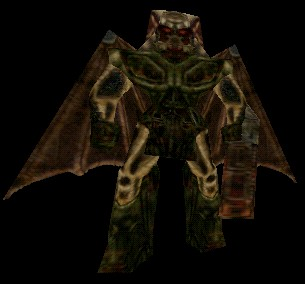

WarLord

A typical Warlord. A Skaarj Berserker probably comes up to about the shoulders of a Warlord in terms of height. |
The Warlord is something of a natural-born military general among the Skaarj. It bears a number of resemblances to a Skaarj Trooper in its bodily structure and battle tactics, but this really is a unique enemy in the Unreal universe. The Warlord is armed with a low-recoil Rocket Launcher, because the recoil from a typical eightball gun would probably interfere with the Warlord during flight. In particular, the Warlord demonstrates itself to be a very agile warrior, typically choosing to dodge slow-moving projectiles while in the air.
Properties
- StrikeDamage
- this byte variable determines the base amount of damage that the Warlord does whenever it needs to take a swat at an enemy in melee combat.
- bTeleportWhenHurt
- can be used to make the Warlord act differently when it should have been killed. Instead of screaming and dying the way it normally would, a Warlord that is told to teleport when hurt will simply stop fighting and play and animation that makes it appear to be acting a personal teleportation device. The Warlord will then disappear from the map in a way that makes it look like it teleported away.
Orders
- Mutilating
- The Warlord will stand in place playing animations for hitting, kicking, and eating from an object in front of it. When the Warlord's attention is acquired by a player, then it will stop executing these orders. It will follow its AlarmTags if it has any, otherwise it will taunt the player and then engage him in combat.
Related Topics
- Monster Support
- Invasion (UT2004 gametype)